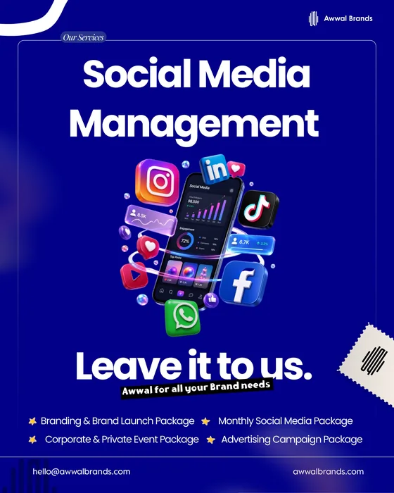
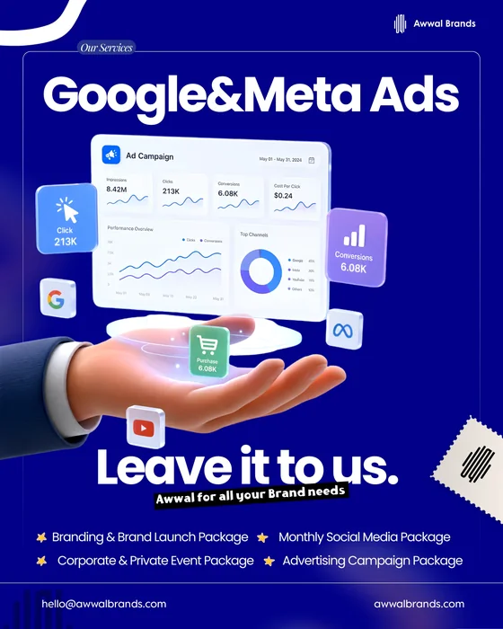

Start with a clear point of view.
Audience, message and a plan built around what makes your brand matter.

Connect a clear creative idea to the channels your audience actually uses. Awwal supports businesses in Dammam with social media management, campaign content, search visibility and Google and Meta advertising.
نساعد الأنشطة التجارية في الدمام على تنظيم حضورها الرقمي من خلال إدارة حسابات التواصل الاجتماعي، وصناعة المحتوى، وتحسين الظهور في البحث، وإعلانات جوجل وميتا. نربط الرسالة الإبداعية بهدف واضح وخطة محتوى مناسبة.
BUILD A CAMPAIGN ↗Audience, message and a plan built around what makes your brand matter.
Campaign creative and content designed to feel consistent across every touchpoint.
Digital activation shaped by performance, insight and the next opportunity.
A useful campaign begins with a defined audience and a specific objective. A launch, a seasonal promotion and an ongoing social presence need different content and decisions. We bring planning, creative production and channel management into one brief, with a review process that keeps the work connected to the business goal.
Content themes, posting formats and a planned publishing rhythm built around your brand and channels.
Campaign planning and creative for relevant ad placements, with objectives and measurement discussed before launch.
Search-friendly service content and technical foundations that make your website easier to discover and understand.
Posters, social graphics, short-form content and coordinated assets that adapt one message across formats.
Your Awwal service visuals, shown in full. Open any poster to inspect the detail.

Awwal social-media management service poster with social platform graphics.
Open full poster ↗
Campaign visual; the dashboard figures are illustrative, not reported campaign results.
Open full poster ↗Identify the audience, offer, channels, budget and outcome that the campaign should support.
Agree the content and approvals needed for the chosen channels and campaign period.
Use available reporting to understand what happened and inform the next round of activity.
Monthly social media is one of Awwal's service packages. The channels, volume of content, approvals and responsibilities are agreed in the brief.
The proposal should distinguish creative and management work from the budget paid to advertising platforms. Confirm both before a campaign begins.
No. Results depend on the market, competition, offer, budget and platform systems. We can define the work and measurement plan, but cannot promise a particular ranking or business result.
Share your project, audience and timeframe. We’ll discuss the scope and the next steps.
Discuss your project ↗hello@awwalbrands.comAwwal Brands (Awwal Brand Solutions) supports businesses in Dammam, Al Khobar and Jubail with branding, design and digital marketing. Explore the service you need and send your brief to discuss scope and availability.
أول براندز: تصميم الشعارات والبوسترات، إدارة حسابات التواصل الاجتماعي، التسويق الرقمي، التصوير وتصميم المواقع للأعمال في الدمام والخبر والجبيل والمنطقة الشرقية.
SOCIAL MEDIA CREATIVES & MANAGEMENT
A plan for your next stage.
Monthly content and management, with a clear scope. Choose your starting point or shape a package around your brand.
All prices in Saudi riyals (SAR), per month. Monthly asset counts are shared across platforms. Ad spend is paid separately by the client.
Basic
SAR 1,299/ month
- Maximum 1 platform
- 5 static posts / month
- 1 edited reel / month
- No content sessions
- Paid campaign management excluded
- Monthly report
- Community handling excluded
Enquire about Basic ↗Starter
SAR 2,499/ month
- Up to 2 platforms
- 10 static posts / month
- 3 edited reels / month
- No content sessions
- Paid campaign management excluded
- Monthly report
- Basic DMs & comments
Enquire about Starter ↗Growth
SAR 5,999/ month
- Up to 3 platforms
- 16 static posts / month
- 4 edited reels / month
- 1 content session × 4 hours
- 1 campaign; ad-spend cap SAR 10,000 / month
- Monthly report + live review call
- DMs & comments during business hours
Enquire about Growth ↗Pro
SAR 10,999/ month
- Up to 4 platforms
- 24 static posts / month
- 8 edited reels / month
- 3 content sessions × 4 hours
- 3 campaigns; ad-spend cap SAR 30,000 / month
- Twice-monthly reports + dedicated strategy meetings
- Detailed community handling within the service scope
Enquire about Pro ↗Custom plan
From SAR 800 / month, priced to your requirements. Fully customised platforms and assets, with flexible production and campaigns.
Scope & service terms
Read the inclusions, production limits and payment terms before choosing a plan.
Content & assets
Post and reel quantities are unique monthly assets across the package, not quantities per platform. Cross-posting and basic resizing for the listed platforms are included. A carousel of up to 5 slides counts as 2 static posts. Stories, additional formats, and platform-specific alternate concepts are extra.
All tiers include a monthly calendar, scheduling, and Arabic and English captions of up to 100 words per language per asset. Specialised translation, extensive research, and new copy directions after approval are extra. Reels are up to 30 seconds, with basic cuts, colour correction, captions, and licensed library audio; animation and commercial production are excluded.
Production & locations
Basic and Starter use client-supplied footage, limited to 10 minutes of source footage per reel. Growth and Pro include one creator with a compact camera, light, and microphone kit at one Dammam, Khobar, or Dhahran location per session.
Sessions support the included reels and posts; no separate photo gallery or raw footage delivery is included. Full-day crew shoots, talent, studios, and travel outside these cities are extra.
Paid campaign scope
Included campaign management covers up to 2 ad sets and 4 active ads per campaign, basic native-platform reporting, and weekly optimisation. Creatives come from the monthly content allowance. Ad spend is paid directly by the client.
New tracking installations and advanced campaign production are extra. Above the spend or scope cap, use a separate advertising retainer or agreed upgrade; overlapping work is not charged twice.
Customisation & add-ons
All packages can be fully customised to meet specific brand needs. Additional posts, reels, stories, full-day multi-location shoots, specialised animations, extended ad campaign management, or dedicated community management can be added to any tier upon request.
Custom packages and scope adjustments will be quoted and agreed upon prior to execution.
Support & approvals
Business hours are Sunday–Thursday, 9 am–6 pm Saudi time, excluding public holidays. Community work covers routine responses using approved answers and escalation of sales or complaints to the client. It excludes order handling and continuous customer service.
Routine requests receive a response within 1 business day; Pro within 4 business hours. Each monthly batch includes 2 consolidated revision rounds.
Commercial terms
Projects: 50% advance to book; the remaining 50% is due after final approval and before the release of unrestricted final files, website launch, or account handover. Retainers: 100% payable before each calendar month.
Print & external production: 100% of approved third-party costs before supplier orders are placed. Work starts when payment, brief, access, and required assets are received.
Overdue payments may pause work after written notice. Timelines resume subject to availability. The accepted quote records any changes to these terms.